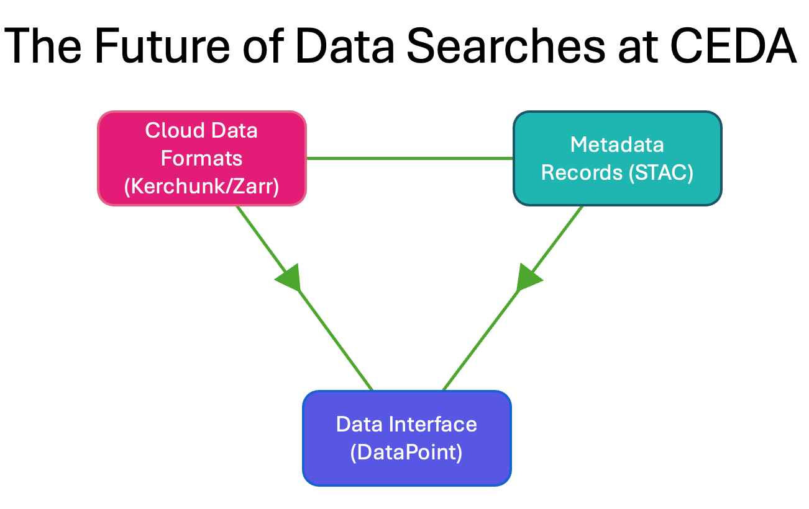

Inspiration for DataPoint
A paradigm shift is underway among many data storage centers as the need for cloud-accessible analysis-ready data increases. There are significant issues relating to accessibility with current storage formats, and the existing archives of data which are not suited for aggregation and usage in cloud applications. Several technologies are in development for storing data in more cloud-accessible formats such as Zarr and Cloud-Optimised Geotiff (COG), as well as less storage-intensive reference formats like Kerchunk and CFA. At CEDA we have begun to create and ingest these new file formats, but have yet to advertise these new advancements to our user community. In order to create the best environment for accessing our cloud data products, we have created an API called DataPoint.
1. Data Aggregations
The ideal scenario for accessing data from a user perspective is a single dataset object that contains all the data and attributes required. In practice, a single file representing this dataset only works if the data is relatively small - very unlikely to be the case, especially with increasing resolutions in new datasets. Instead the dataset is normally split up between multiple files that may represent a slice of the total dataset in time, by region, or otherwise. This then presents a problem: how to present this to the user as a single continuous entity while pulling from all the individual distributed files.

Methods to solve this problem typically involve aggregating the data to present a unified dataset. This can be done either on-the-fly as the data is accessed, or determined beforehand and saved somehow. This is where cloud optimised formats come in - saving the aggregations is far better because the way to build the dataset is already known. On-the-fly aggregations may work well for small datasets, but if there are many thousands of files, each with multiple variables and dimensions that need to be connected in a convoluted way, that will take some time!
2. Generating Cloud Formats
Over the last 18-24 months we’ve been using various tools to generate new reference files with Kerchunk or new cloud data stores with Zarr. These have been ingested into the CEDA Archive and are accessible to all users - except that no one knows how to use or even find them. Since these technologies are relatively new to most of the communities that make use of our services, the mechanisms for accessing these types of data are not well known or well understood, with researchers using our data preferring more well-established formats like NetCDF/HDF which have existed for several decades. What we were looking for was a way to introduce these formats in a way that does not require all users to learn to use multiple new formats and tools in what would be a large barrier to optimised use of our data.
3. The CEDA Singularity
DataPoint is the culmination of several ideas around creating a single point of access to the data archived at CEDA; the so-called ‘CEDA Singularity’. It is a STAC API which connects to our STAC catalogs - again a new technology that most users do not utilise - and can be used to search across our data holdings to find specific datasets and metadata. What sets DataPoint apart is the ability to directly open datasets from cloud formats without the user needing to understand the format or specific configuration for opening the dataset.

All the storage details and options are abstracted from the users, for which it doesn’t matter anyway. With DataPoint, a user can search across a vast library of datasets, select a specific dataset matching a set of constraints and then simply open the result as a dataset. DataPoint handles the extraction of the link to the cloud formats stored in our archive to present a dataset that looks the same regardless of what type or format the data is stored.
4. What’s Next?
Currently our STAC catalogs represent only a small fraction of the total CEDA archive which spans more than 40 years of data, totalling over 25 Petabytes. Even less of the data has a cloud representation that can be fully utilised by datapoint. The next step towards greater data accessibility will be to dramatically expand our STAC representations as well as the cloud formats required for DataPoint. We have well established pipelines for generating both, which will become immediately available to all DataPoint users when published to our production indexes. The below diagram illustrates these three components delivering a cohesive data search service.
